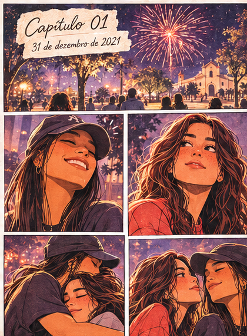

31 de dezembro de 2021
Carregando capítulo...
UMA HISTÓRIA SOBRE NÓS
TOQUE PARA ENTRAR⌄
Algumas páginas guardam o que o tempo não conseguiu levar.

Carregando capítulo...
“That it will never come again
is what makes life so sweet.”
Emily Dickinson Uma lembrança sobre a beleza do que é passageiro
Chegamos à última página desta história.
O que vivemos existiu. Teve beleza, teve dificuldade, teve aprendizado e deixou marcas que fazem parte de quem sou.
Obrigada por ter existido na minha história.
A fotografia escolhida aparece apenas nesta visualização do navegador.
Uma pausa, uma música e o tempo seguindo.
Algumas histórias terminam. O que elas despertaram na gente continua encontrando novos lugares para existir.
O que também aconteceu dentro de mim.
A parte que não foi abraçada. A parte difícil de olhar, proteger ou aceitar. Essa sou eu.
Talvez eu tenha escondido essa parte por muito tempo. Talvez você tenha escolhido não olhar para ela. Mas agora quero falar sobre o que também aconteceu dentro de mim.
Carreguei culpa por muito tempo. Reconheço os meus erros, mas uma história construída por duas pessoas não pode ser transformada em responsabilidade de uma só.
KKK. Não que eu seja uma grande coitada. Talvez, em algumas situações, eu tenha sido. Mas também tentei. Tentei de verdade, inclusive quando já estava cansada.
Houve momentos em que senti que estava tentando praticamente sozinha. E foi doloroso perceber que, depois de tudo, algumas partes de mim pareciam ter sido apagadas.
Eu carreguei dias difíceis, mau humor, crises, raiva, dificuldades para perdoar e coisas que ficaram sem resposta. Também precisei lidar com a ausência de pedidos de desculpas e com palavras que me machucaram.
Durante cinco anos, não vi, não beijei e não permiti que outra pessoa me tocasse. Foi uma escolha minha, uma regra que estabeleci para mim. E, mesmo quando soube de outras histórias, muitas vezes escolhi ficar em silêncio.
Às vezes me pergunto se você perdeu o respeito por mim. Mas eu também me tornei outra mulher. Nós duas estávamos aprendendo a crescer, a viver e a entender o que significava estar em uma relação.
Enquanto algumas coisas parecem seguir em frente, eu ainda me pego pensando, voltando aos mesmos acontecimentos e tentando entender o que aconteceu comigo.
Tenho descoberto coisas sobre mim, sobre meus pensamentos, minhas repetições e minha dificuldade de desligar a mente. Também tenho entendido melhor minha saúde mental. E aprendi que sofrimento não é competição: estar mal não torna menor a dor de outra pessoa.
Talvez você nunca tenha conhecido essa parte de mim. Talvez nem eu mesma a conhecesse por inteiro.
E isso não é nem metade do que eu gostaria de dizer. Às vezes, ainda tenho vontade de gritar, de perguntar, de entender por que algumas coisas aconteceram.
Mas espero conseguir me curar. Não preciso encontrar resposta para tudo. Quero aprender que lembrar não precisa significar reviver.
Apesar de tudo, ainda consigo encontrar beleza no que vivi. Mas agora também preciso aprender a olhar para mim.
Essa parte sou eu. E, dessa vez, eu não quero deixá-la de lado.
Algumas páginas precisam de uma data para serem encontradas.